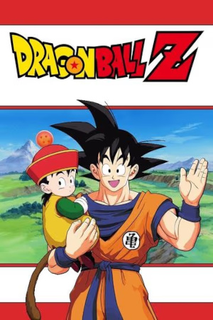
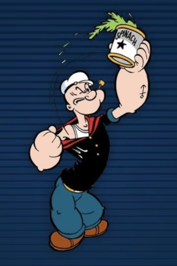
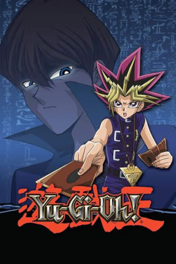
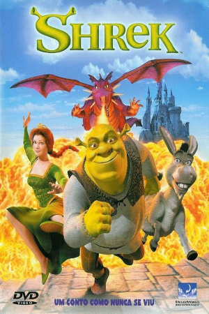
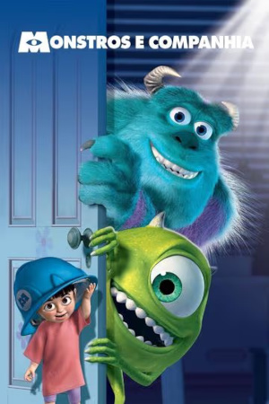
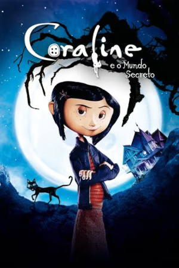

O irmão de Son Goku (protagonista da série Dragon Ball) aparece na Terra e lhe informa que sua família pertence a outro planeta. Goku foi enviado ainda bebê para a Terra com o intuito de conquistá-la. Ao ser relembrado de sua missão, Goku recusa-se a ajudar seu irmão e os Saiyajins. Raça após raça de alien passa a aparecer na Terra e Goku, aliado a seu filho, seu compatriota Vegeta e os amigos que conquistou em sua primeira jornada atrás das esferas do dragão, vai fazer o que puder para manter nosso planeta a salvo.

Acompanhe as incríveis aventuras do marinheiro Popeye, de seu grande amor, Olívia Palito, e do seu rival, o vilão Brutus.

O jovem estudante do ensino médio Yugi Muto derrota o campeão mundial, Seto Kaiba, em um duelo de cartas com a misteriosa ajuda do quebra-cabeça do Millenium. Em razão de sua vitória inesperada, Yugi se torna famoso em todo o mundo e passa a participar de outros duelos para salvar os amigos e a família.

Há muito tempo, em um pântano muito remoto, vivia um ogro feroz chamado Shrek. Um dia, sua solidão é interrompida por uma invasão de personagens surpreendentes. Há pequenos ratos cegos em sua comida, um enorme e péssimo lobo em sua cama, três porquinhos sem teto e outros seres que foram deportados de suas terras pelo maligno lorde Farquaad. Para salvar seu território, Shrek faz um pacto com Farquaad e parte em uma jornada para fazer a linda princesa Fiona concordar em ser a noiva do Senhor. Em uma missão tão importante, ele é acompanhado por um burro divertido, pronto para fazer qualquer coisa por Shrek: tudo, exceto ficar em silêncio.

O astro do susto, Sulley, e seu falante assistente, Mike, trabalham na Monstros S.A., a maior fábrica de processamento de gritos da cidade de Monstrópolis. A principal fonte de energia do mundo dos monstros provém da coleta dos gritos das crianças humanas. Os monstros acreditam que as crianças são tóxicas, e entram em pânico quando uma menininha invade seu mundo. Sulley e Mike fazem de tudo para levar a garota de volta para casa, mas enfrentam desafios monstruosos e algumas situações hilárias em suas atrapalhadas aventuras.

Entediada em sua nova casa, a pequena Coraline descobre uma porta secreta que contém um mundo parecido com o dela, porém melhor em muitas maneiras. Coraline se encanta com a descoberta, mas logo descobre que há algo de errado quando seus pais alternativos tentam mantê-la eternamente nesse mundo paralelo.